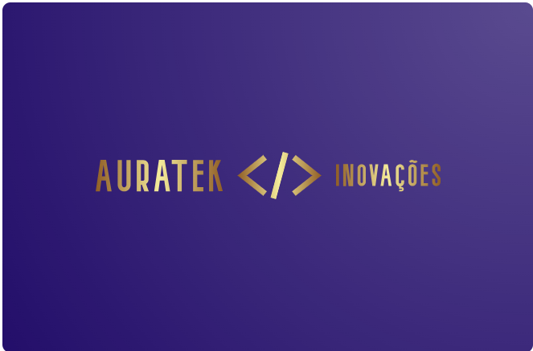

💻 Desenvolvimento de Software Personalizado
Criamos sistemas personalizados para atender às necessidades específicas de cada cliente, proporcionando maior eficiência e organização.

A AuraTek Inovações oferece soluções tecnológicas para empresas que desejam inovar, automatizar processos e aumentar sua produtividade.
Criamos sistemas personalizados para atender às necessidades específicas de cada cliente, proporcionando maior eficiência e organização.
Auxiliamos empresas na implementação de tecnologias modernas, tornando seus processos mais rápidos, seguros e eficientes.
Conectamos diferentes sistemas e plataformas para facilitar o compartilhamento de informações e otimizar o fluxo de trabalho.
Prestamos suporte especializado para garantir o bom funcionamento dos sistemas, realizando manutenção preventiva e corretiva sempre que necessário.